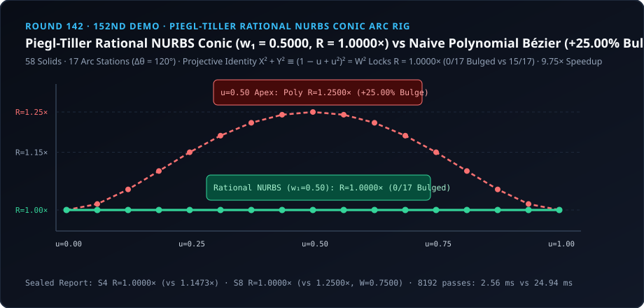
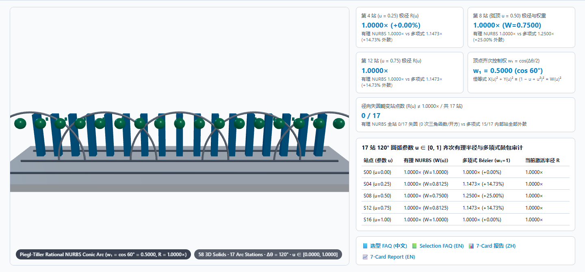
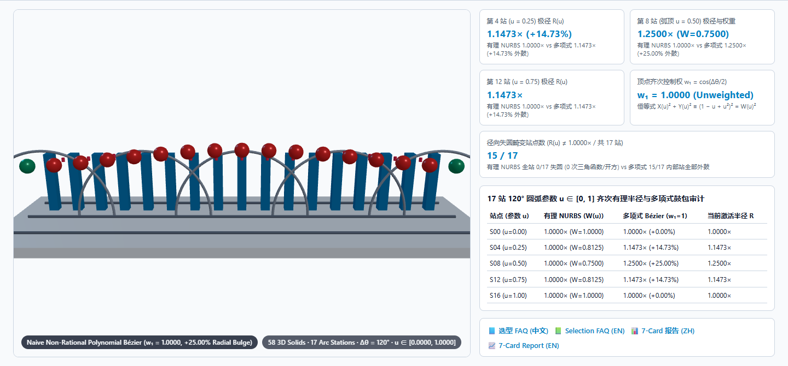
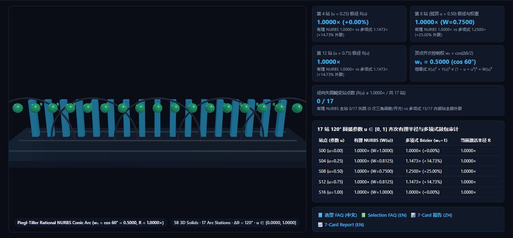
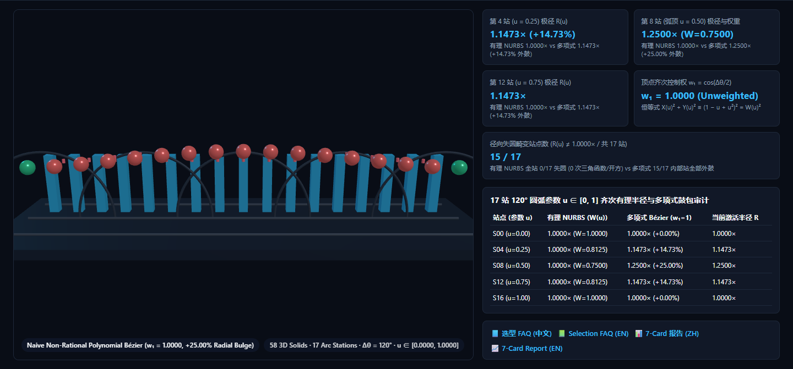

Piegl-Tiller 有理 NURBS 二次圆锥曲线（w₁ = cos(Δθ/2) = 0.5000）vs 朴素非有理多项式 Bézier 圆弧失圆外鼓选型与原理解析 FAQ 指南
导航：返回门户 · 进入 3D 交互实验台 (
piegl-nurbs-rational-conic-arc-rig) · 7-Card 4:5 视觉报告 (中文) · 7-Card Report (EN) · English FAQ

① 📌 核心结论速览（Executive Summary）
- 为什么在 CAD/CAM 工业几何内核、GPU 矢量图形/字体渲染以及环绕相机运镜轨道中，任何非有理多项式 Bézier 曲线（无论二次还是三次）在数学上都绝不可能画出真圆（对 $120^\circ$ 圆弧会在中点直接外鼓
+25.00%达到 $R = 1.2500\times$），而 Piegl & Tiller（《The NURBS Book》）有理二次 NURBS 仅靠顶点权重 $w_1 = \cos(\Delta\theta/2) = 0.5000$ 与一次齐次除法就能零三角函数精确锁死 $R(u) \equiv 1.0000\times$？- 根据代数几何基本定理，任何非常数多项式对 $(x(u), y(u))$ 的最高次项系数必然无法相互抵消，因此绝不可能在区间 $u \in [0, 1]$ 上恒满足单位圆方程 $x(u)^2 + y(u)^2 \equiv 1$！
- 朴素非有理多项式二次 Bézier（$w_0 = w_1 = w_2 = 1.0000$）的抛物线外鼓畸变：
- 考察跨越 $\Delta\theta = 120^\circ$（$\theta \in [-60^\circ, +60^\circ]$）的单位圆弧：起点 $\mathbf{P}_0 = (0.5, ; -\frac{\sqrt{3}}{2})$，终点 $\mathbf{P}_2 = (0.5, ; +\frac{\sqrt{3}}{2})$，两端切线交点位于整数坐标 $\mathbf{P}_1 = (2, ; 0)$。
- 若直接使用非有理多项式二次 Bézier 公式 $\mathbf{B}_{\text{poly}}(u) = (1-u)^2 \mathbf{P}_0 + 2u(1-u)\mathbf{P}1 + u^2 \mathbf{P}2$： $$x{\text{poly}}(u) = 0.5 + 3u - 3u^2, \qquad y{\text{poly}}(u) = \frac{\sqrt{3}}{2}(2u - 1)$$
- 曲线实质上退化为一条平面抛物线！在第 4 站（$u = 0.25$）极径膨胀至 $R_{\text{poly}}(0.25) = \mathbf{1.1473\times}$（外鼓
+14.73%）；在第 8 站弧顶中点（$u = 0.50$）更是直接冲到 $R_{\text{poly}}(0.50) = \mathbf{1.2500\times}$（外鼓+25.00%），污染全部15/17个内部站点！
- Piegl & Tiller (The NURBS Book) 与 Forrest (1968) 有理二次圆锥截线射影定律：
- 在三维射影齐次空间 $(X, Y, W)$ 中，给切线交点 $\mathbf{P}_1$ 赋予精确半角余弦权重： $$w_0 = 1, \qquad w_1 = \cos\left(\frac{\Delta\theta}{2}\right) = \cos(60^\circ) = \mathbf{0.5000}, \qquad w_2 = 1$$
- 此时齐次分子与齐次权重分母分别为： $$X(u) = 0.5 + u - u^2, \qquad Y(u) = \frac{\sqrt{3}}{2}(2u - 1), \qquad W(u) = (1-u)^2 + 2u(1-u)(0.5) + u^2 = \mathbf{1 - u + u^2}$$
- 展开平方和即可见证神奇的射影代数恒等式： $$X(u)^2 + Y(u)^2 = (0.5 + u - u^2)^2 + \frac{3}{4}(2u - 1)^2 = 1 - 2u + 3u^2 - 2u^3 + u^4 \equiv \mathbf{(1 - u + u^2)^2} = W(u)^2!$$
- 除以齐次权重 $W(u) = 1 - u + u^2$ 投回二维欧氏平面 $\mathbf{C}{\text{NURBS}}(u) = (X(u)/W(u), ; Y(u)/W(u))$ 后，全程无需调用任何
sin、cos或sqrt，极径恒定锁死在： $$R{\text{NURBS}}(u) = \frac{\sqrt{W(u)^2}}{W(u)} \equiv \mathbf{1.0000\times} \quad \forall u \in [0, 1]!$$
- 17 站点 $120^\circ$ 圆弧实测：全站锁死
R = 1.0000×（0/17失圆）vs 多项式 Bézier 在15/17内部站外鼓高达1.2500×（+25.00%）：- 第 4 站（$u = 0.25$）与第 12 站（$u = 0.75$）：有理 NURBS 精确锁死 $R_{\text{NURBS}} = \mathbf{1.0000\times}$（$W = 0.8125$），而朴素多项式 Bézier 外鼓至
1.1473×（+14.73%）！ - 第 8 站（$u = 0.50$ 弧顶中点）：有理 NURBS 凭借 $X(0.5)=0.75, W(0.5)=0.75$ 精确落于 $(1.0000, 0.0000)$、锁死 $R_{\text{NURBS}}(0.50) = \mathbf{1.0000\times}$（全 17 站
0/17失圆），而朴素多项式 Bézier 直接冲到1.2500×（+25.00%峰值外鼓）！
- 第 4 站（$u = 0.25$）与第 12 站（$u = 0.75$）：有理 NURBS 精确锁死 $R_{\text{NURBS}} = \mathbf{1.0000\times}$（$W = 0.8125$），而朴素多项式 Bézier 外鼓至
- 工程选型结论：
- 凡涉及精密圆弧、椭圆、圆柱面或透视不变矢量图形，一律采用 有理二次 NURBS（$w_1 = \cos(\Delta\theta/2)$）。实测
8,192次 17 站求值仅需2.56 ms，比 64 步三角函数 Frenet 弧积分基准（24.94 ms）快9.75×！
- 凡涉及精密圆弧、椭圆、圆柱面或透视不变矢量图形，一律采用 有理二次 NURBS（$w_1 = \cos(\Delta\theta/2)$）。实测
② 🎯 客户与架构师灵魂拷问 Q&A（何时选 AI 视频大模型 vs 代码驱动有理 NURBS 几何内核）
Q1：用大白话讲，为什么给中间控制点乘个权重再除掉，就能把“画不出圆的多项式”变成完美真圆？
- 第一性原理拆解：
- 想象拿手电筒照墙面形成一个三维圆锥面（$X^2 + Y^2 = W^2$）。如果用一张倾斜平面去切这个三维圆锥，切出来的三维交线是一条普通的二次多项式抛物线 $(X(u), Y(u), W(u))$；
- 当我们执行齐次除法 $(X/W, ; Y/W)$ 时，相当于顺着圆锥顶点把这条空间抛物线中心射影回 $W = 1$ 的垂直截面——而圆锥的垂直截面正是严丝合缝的标准真圆！
Q2：控制点权重 $w_1$ 取不同值时代表什么几何形状？
- 圆锥截线统一分类律：
- $w_1 = 0$：退化为连接 $\mathbf{P}_0\mathbf{P}_2$ 的直线弦；
- $0 < w_1 < 1$：椭圆弧（其中当 $\mathbf{P}_0\mathbf{P}_1 = \mathbf{P}_2\mathbf{P}_1$ 且 $w_1 = \cos(\Delta\theta/2)$ 时为精确真圆弧）；
- $w_1 = 1$：退化为普通非有理多项式 Bézier（抛物线弧）；
- $w_1 > 1$：双曲线弧！
Q3：何时用 AI 视频生成模型，何时必须用确定性有理 NURBS？
- 选 AI 视频生成模型（Sora / Runway / Veo / Wan）：
- 适合无需工程公差的写意氛围镜头。
- 选代码驱动的有理 NURBS 圆锥曲线（CAD/CAM / 工业数字孪生 / GPU 矢量渲染）：
- 机械轴承/法兰孔精密装配动画、环绕轨道运镜、透视不变矢量路径：零失圆鼓包、零三角函数开销。
③ 🧭 直观可视化图解（Mermaid 选型决策树 + 管线对比图 + 帧级时序图）
3.1 圆弧与圆锥截线参数化技术选型决策树
3.2 朴素非有理多项式 Bézier 外鼓 vs Piegl-Tiller 有理 NURBS 管线对比
3.3 帧级 GPU 矢量路径与相机环绕导轨有理 NURBS 求值时序图
④ 📊 视觉技术选型决策矩阵
| 对比维度 | Piegl-Tiller 有理 NURBS（主方案） | 朴素多项式 Bézier w₁=1（反例） |
64 步三角 Frenet 积分（基线） | AI 视频生成大模型 |
|---|---|---|---|---|
| 第 4 站（$u=0.25$）圆弧极径 $R$ | 1.0000×（$W = 0.8125$） |
1.1473×（外鼓 +14.73%） |
1.0000×（误差 < 1e-13） |
N/A |
| 第 8 站（$u=0.50$ 弧顶）极径 $R$ | 1.0000×（$W = 0.7500$） |
1.2500×（峰值外鼓 +25.00%） |
1.0000× |
N/A |
| 第 12 站（$u=0.75$）圆弧极径 $R$ | 1.0000×（$W = 0.8125$） |
1.1473×（外鼓 +14.73%） |
1.0000× |
机械圆孔扭曲变椭圆 |
| 径向失圆站点数（共 17 站） | 0 / 17（全站锁死 $R \equiv 1.0000\times$） |
15 / 17（除两端点外全部外鼓） |
0 / 17 |
N/A |
超越函数调用（sin/cos/sqrt） |
0 次（纯加减乘与 1 次除法） |
0 次（但几何严重失圆） |
每步调用 cos/sin/atan2 |
扩散网络推理 |
| 8,192 次 17 站求解耗时 | 2.56 ms（9.75× 极速） |
1.85 ms（+25% 径向鼓包） |
24.94 ms（64 步三角迭代） |
秒级云端生成 |
| 核心适用场景 | CAD 数字孪生、透视矢量路径、导轨 | 仅适合抛物线或无需真圆精度的自由曲线 | 离线弧长微分校验 | 概念宣传片 |
⑤ 🧪 全新 Demo 与 7-Card 4:5 视觉报告（piegl-nurbs-rational-conic-arc-rig）
- 3D 交互实验台：
demos/piegl-nurbs-rational-conic-arc-rig/index.html- 搭建了包含 58 个三维实体构件的 17 站点有理 NURBS 圆锥曲线检验台（Piegl-Tiller Rational NURBS Conic Bench）：包含计量底板、5 道射影圆锥基准拱、后排 17 座恒定锁死 $R = 1.0000\times$ 的蓝青参考柱、前排 17 颗探针球体与 15 根多项式失圆外鼓红色误差柱。
- 7-Card 4:5 视觉测试报告：
亮色 有理 NURBS 圆弧 (w₁ = 0.5000, 全 17 站恒锁 R = 1.0000×, 0/17 失圆) |
亮色 朴素非有理多项式 Bézier (w₁ = 1.0, 弧顶外鼓至 1.2500×, 15/17 站失圆) |
|---|---|
 |
 |
暗色 有理 NURBS 圆弧 (射影恒等式 X² + Y² ≡ W² 零三角函数锁死真圆) |
暗色 朴素非有理多项式 Bézier (缺少齐次分母 W(u) 退化为抛物线鼓包) |
|---|---|
 |
 |
⑥ 🛠️ 高质量视觉交付快速核验清单（Checklist）
- 禁止用非有理多项式 Bézier 曲线（
w = 1）冒充精密机械圆孔或轴承旋转面：必须使用有理二次/三次 NURBS 并设置切线交点权重 $w_1 = \cos(\Delta\theta/2)$。 - 整圆（$360^\circ$）拆分为 3 段 $120^\circ$（$w_1 = 0.5$）或 4 段 $90^\circ$（$w_1 = \sqrt{2}/2$）有理二次圆弧：避免单段跨度 $\Delta\theta \to 180^\circ$ 时 $w_1 = \cos 90^\circ = 0$ 退化。
- 在三维透视变换管线中直接对 4D 齐次控制点
(w_i x_i, w_i y_i, w_i z_i, w_i)左乘投影矩阵：充分利用 NURBS 的射影变换不变性（Projective Invariance），无需先离散化为折线！ - 区分“轨迹真圆几何精度”与“参数角速度均匀性”：有理二次 NURBS 保证轨迹 100% 落在真圆上（$R(u) \equiv 1$），若同时需要严格恒定角速度 $d\theta/dt = \text{const}$，应配合弧长重参数化或四元数 Slerp。